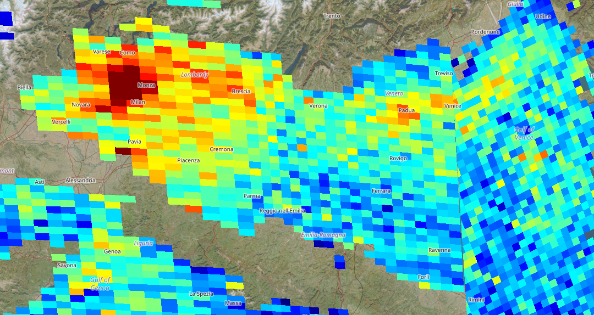
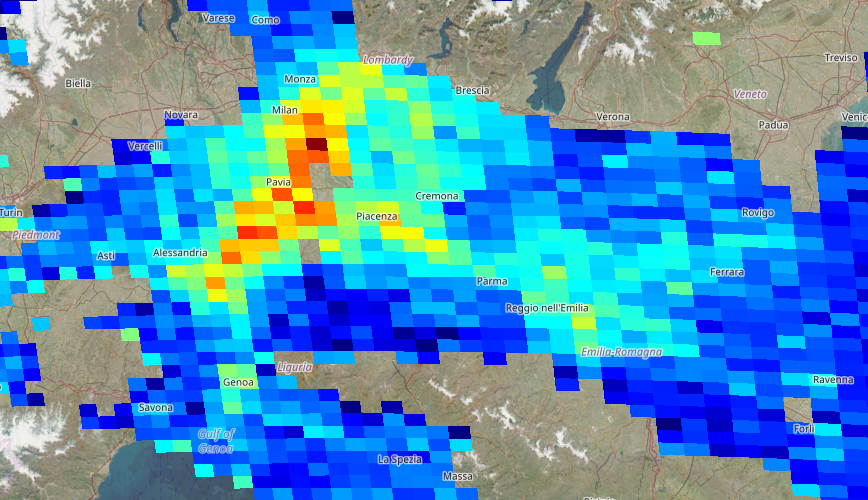

Che cos'è l'NO2
Il biossido di azoto è un gas prodotto soprattutto da combustione, traffico, riscaldamento e attività industriali. Irrita le vie respiratorie e peggiora la qualità dell'aria urbana.
Educazione civica e ambiente
Il lockdown è stato un disastro sociale ed economico, ma ha lasciato un dato utile: quando traffico e attività rallentano, l'aria cambia davvero. Questo progetto fa riferimento alla Pianura Padana per mostrare quella lezione in modo diretto.

Confronto interattivo
A sinistra compare il periodo Covid, a destra la situazione attuale. I colori freddi indicano concentrazioni più basse; giallo, arancione e rosso indicano valori più elevati.

Durante Covid OggiLa riduzione di traffico e attività ha abbassato molte emissioni, rendendo meno estese le aree con colori caldi.
Con la ripresa degli spostamenti e delle attività produttive, le concentrazioni tornano più evidenti in diverse zone.
Contesto
La qualità dell'aria non è solo un dato scientifico: riguarda salute pubblica, mobilità, scelte energetiche e responsabilità collettiva.
Il biossido di azoto è un gas prodotto soprattutto da combustione, traffico, riscaldamento e attività industriali. Irrita le vie respiratorie e peggiora la qualità dell'aria urbana.
La Pianura Padana ha molte aree urbane e produttive ravvicinate. Quando l'aria circola poco, gli inquinanti restano più a lungo vicino al suolo.
Durante le restrizioni del 2020 molte attività e molti spostamenti sono diminuiti. Il confronto delle mappe rende visibile il peso delle attività umane.
Dati essenziali
I valori cambiano in base a periodo, meteo e zona osservata, ma il messaggio civico resta chiaro: ridurre le emissioni modifica rapidamente l'aria.
In diverse aree del Nord Italia le concentrazioni di NO2 calarono sensibilmente durante le restrizioni del 2020.
I satelliti per l'osservazione atmosferica permettono di confrontare aree vaste e periodi diversi con continuità.
Traffico, industria, riscaldamento e produzione energetica sono tra i fattori più importanti per le emissioni locali.
Trasporto pubblico efficace, edifici più efficienti, mobilità elettrica dove ha senso, controlli sulle emissioni e pianificazione urbana possono ridurre l'inquinamento senza aspettare un'emergenza.
Riflessione finale
La mappa non serve solo a vedere dove l'aria è più inquinata. Serve a capire che le decisioni pubbliche e private lasciano una traccia misurabile.
Usare mezzi pubblici, condividere spostamenti, ridurre consumi inutili e scegliere energia più pulita sono azioni piccole, ma ripetute da molti diventano rilevanti.
Le istituzioni possono incidere con trasporti, norme sulle emissioni, aree verdi, riqualificazione degli edifici e politiche industriali più severe.
Fonti